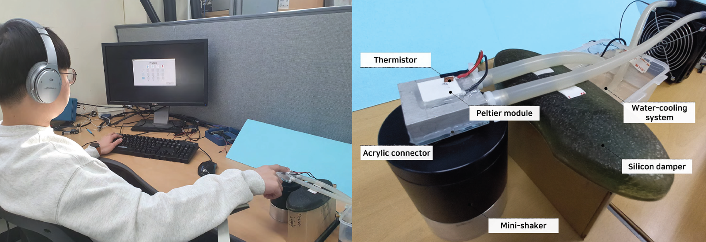
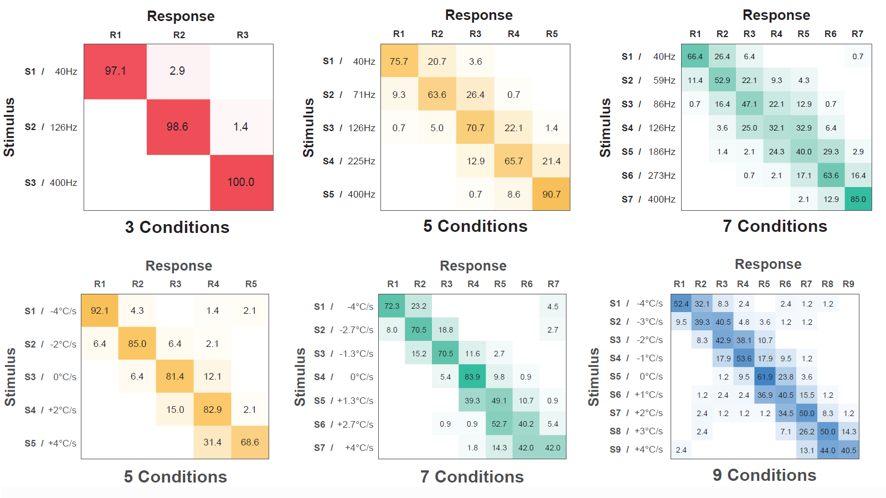
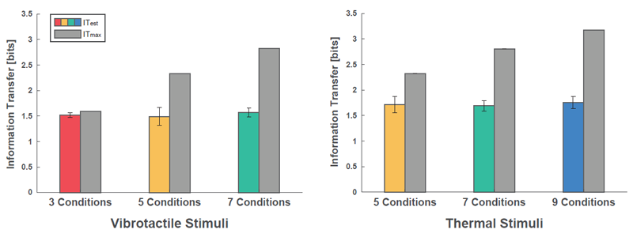
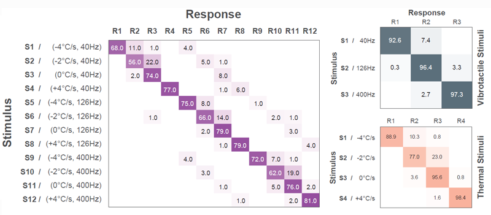

INFORMATION TRANSFER OF MULTIMODAL STIMULI
Between Vibrotactile and Thermal Sensations
A Preliminary Study on the Perceptual Independence Between Vibrotactile and Thermal Senses
Conference of Eurohaptics, 2022
ABSTRACT
We study whether the vibrotactile and thermal senses are independent in terms of information transmission. In Exp. 1, we estimated the respective information transmission capacities of vibrotactile and thermal stimuli. In Exp. 2, we measured the information transfer (IT) of vibrotactile-thermal multimodal stimuli. We compare the IT values obtained in the two experiments and demonstrate that approximately 90% of the information encoded through the two sensory modalities is preserved when they are combined. This result can contribute to the design of multimodal haptic stimuli for various user-interactive purposes.
FULL CITATION
Jaejun Park, Jeongwoo Kim, Chaeyong Park, Seungjae Oh, and Seungmoon Choi. A Preliminary Study on the Perceptual Independence Between Vibrotactile and Thermal Senses. International Conference on Human Haptic Sensing and Touch Enabled Computer Applications (EuroHaptics'22). Springer, 75-83. https://doi.org/10.1007/978-3-031-06249-0_9
FIGURES

Experiment setup (left) and apparatus for stimulation (right).

Confusion matrices obtained with the thermal stimuli. (Top) Vibrotactile stimuli. (Bottom) Thermal Stimuli

Estimated and maximum IT values with standard errors.

Confusion matrices for the multimodal stimuli.